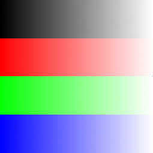
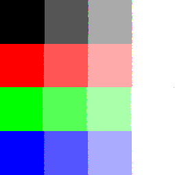
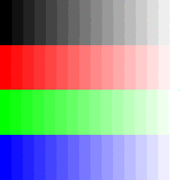
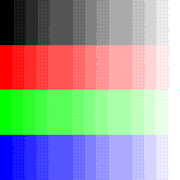

Image32 Image32::addRandomNoise (double noise):
This method outputs a new image image with random noise added to each pixel. The value of the input parameter should be in the range [0,1] representing the fraction of noise that should be added. The actual amount of noise added is in the range [-noise,noise].
At each pixel, a noise in the range [-noise, noise] * 255 is
added to each channel. Since the resulting
value can go beyond the
range of 8-bit, a function
static int clampToRange(double x, int min = 0, int max = 255)
is used to clamp the values back to the range.
 |
|||||
--noisify 0 |
--noisify .1 |
--noisify .3 |
--noisify .5 |
--noisify .7 |
--noisify.9 |
Image32 Image32::brighten (double brightness) const:
This method outputs a new image in which each pixel is brightened. The value of the input parameter is the scale by which the image should be brightened.
 |
|||||
--brighten.3 |
--brighten.5 |
--brighten.7 |
--brighten 1 |
--brighten 2 |
--brighten 4 |
Image32 Image32::luminance (void) const:
This method outputs the gray-scale image, using the formula \(\bar{L} = 0.30 \cdot r_{p} + 0.59 \cdot g_{p} + 0.11 \cdot b_{p}\).
--gray |
--gray |
--gray |
Image32 Image32::contrast (double contrast) const:
This method outputs a new image in which the contract has been changed.
The value of the input parameter is the scale by which the contrast of
the image should be changed.
The mean image luminance (averaged over all pixel) is first computed:
Then the deviation from \(\bar{L}\) is scaled by the following formula:
Finally the result is clamped to range [0, 255].
 |
 |
|||
--contrast .5 |
--contrast .7 |
--contrast 1 |
--contrast 2 |
--contrast 4 |
Image32 Image32::saturate (double saturation) const:
This method outputs a new image in which the saturation of each pixel has been changed.
The value of the input parameter is the scale by which the saturation of the pixel should be changed.
Contrary to the contrast, a per pixel luminance is first computed:
Then the deviation from \(L_{p}\) is scaled and clamped similar to the contrast function.
 |
 |
|||
--saturate .5 |
--saturate .7 |
--saturate 1 |
--saturate 2 |
--saturate 4 |
Image32 Image32::crop (int x1, int y1, int x2, int y2) const:
This method outputs a croppedimage. The values of the input parameters specify the corners of the cropping rectangle. I have made this function robust such that the order of the corners does not matter, as long as they define a valid rectangle.
 |
 |
 |
||
Original |
--crop 0 0 500 500 |
--crop 0 500 500 0 |
--crop 150 500 500 150 |
--crop 500 150 150 500 |
As you can see in the above images, defineing the cropping rectangle in different order will not affect the result.
Image32 Image32::quantize (int bits) const:
This method outputs a new image in which each pixel is represented by a fixed number of
bits. The final pixel values are obtained by quantizing.
The value of the input parameter is the number of bits that should be used to represent a color
component in the output image.
The first step is to transfer the intensity to the range of [0,1] by:
Then we use the formula in the slides \(I = \text{floor}(I \cdot 2^{b})\), to map all the pixel value into \([0, 1, ..., (2^{b} - 1)]\).
Finally, we map back the pixel value to \([0,255]\) by:
|  |  |
 |  | |
Original |
--quantize 1 |
--quantize 2 |
--quantize 4 |
--quantize 6 |
Image32 Image32::randomDither (int bits) const:
This method outputs a new image in which each pixel is represented by a fixed number of bits. The final pixel values are
obtained by adding noise to the pixel color channels and then quantizing. The value of the input parameter is the number
of bits that should be used to represent a color component in the output image.
Based on the formula for Random Dither:
We can directly call
addRandomNoise() and quantize() to do a random dither.
Original |
--rDither 1 |
--rDither 2 |
--rDither 4 |
--rDither 6 |
Image32 Image32::orderedDither2X2 (int bits) const:
This method outputs a new image in which each pixel is represented by a fixed number of bits. The final pixel values are
obtained by using a 2x2 dithering matrix to determine how values should be quantized. The value of the input parameter
is the number of bits that should be used to represent a color component in the output image.
The formula for Ordered Dither from class is:
|  |  |
|||
Original |
--oDither2x2 1 |
--oDither2x2 2 |
--oDither2x2 4 |
--oDither2x2 6 |
Image32 Image32::floydSteinbergDither (int bits) const:
This method outputs a new image in which each pixel is represented by a fixed number of bits. The final pixel values are
obtained by using Floyd-Steinberg dithering for propogating quantization errors. The value of the input parameter is the
number of bits that should be used to represent a color component in the output image.
Using the psedo codes from the slides, we can implement the Floyd-Steinberg Dithering as following:
Original |
--fsDither 1 |
--fsDither 2 |
--fsDither 4 |
--fsDither 6 |
Image32 Image32::blur3X3 (void) const:
This method outputs a blur of the image using a 3x3 mask.
Essentially this is a 3x3 convolution with an averaging mask. Thus a function static Image32 convolution(const Image32 &image, double matrix[3][3], int scale = 1) is created to handle the convolution.
 |
|
Original |
--blur3x3 |
Image32 Image32::edgeDetect3X3 (void) const:
This method outpus a new image highlighting the edges in the input using a 3x3 mask.
Essentially, this is a 3x3 convolution with a edge detection (derivative) mask. Thus the same function static Image32 convolution(const Image32 &image, double matrix[3][3], int scale = 1) can be used. However, since after the covolution the what we got is the derivative of the image, we need to map the value back to [0,255], here I simply scaled the value by 10 and clamp it to [0,255] using the sclae parameter in Image32 convolution(const Image32 &image, double matrix[3][3], int scale = 1).
|
|
Original |
--edges3x3 |
Pixel32 Image32::nearestSample (Util::Point2D p) const:
This method returns the value of the image, sampled at position p using nearest-point sampling. Black pixel will be returned if the coordinates were out of range.Pixel32 Image32::bilinearSample (Util::Point2D p) const:
This method returns the value of the image, sampled at position p using bilinear-weighted sampling. Black pixel will be returned if the coordinates were out of range.Pixel32 Image32::gaussianSample ( Util::Point2D p, double variance, double radius) const:
This method returns the value of the image, sampled at position p using Gaussian-weighted sampling. The variance of the Gaussian and the radius over which the weighted summation is performed are specified by the parameters.
Image32 Image32::scaleNearest (double scaleFactor) const:
This method outputs a scaled image which is obtained using nearest-point sampling. The value of the input parameter is the factor by which the image is to be scaled.Image32 Image32::scaleBilinear (double scaleFactor) const:
This method outputs a scaled image which is obtained using bilinear sampling. The value of the input parameter is the factor by which the image is to be scaled.Image32 Image32::scaleGaussian (double scaleFactor) const:
This method outputs a scaled image which is obtained using Gaussian sampling. The value of the input parameter is the factor by which the image is to be scaled.
Using back mapping, for each pixel in the output image, we can find the corresponding pixel in the input image by dividing the scale factor. Using the sampling functions above, we can get the pixel value at the corresponding position. For Gaussian sampling function, the standard deviation is calculated by 1 times the maximum distance between samples in the input and output. The radius is 3 times the standard deviation to cover 99.7% of the Gaussian distribution.
 |
 |
||
 |
|||
.7 |
1.0 |
1.3 |
All three rotating functions were implemented:
In the context below, positive angle means counter clock wise rotation.
Image32 Image32::rotateNearest (double angle) const:
This method outputs a rotated image which is obtained using nearest-point sampling. The value of the input parameter is the angle of rotation (in degrees).Image32 Image32::rotateBilinear (double angle) const:
This method outputs a rotated image which is obtained using bilinear sampling. The value of the input parameter is the angle of rotation (in degrees).Image32 Image32::rotateGaussian (double angle) const:
This method outputs a rotated image which is obtained using Gaussian sampling. The value of the input parameter is the angle of rotation (in degrees).
Rotations are very similar to the scale, except we need to first calculate the rotated image sizes. Thus I created a function
static void calculateRotatedImageSize(const Image32 &image, double angle, int &height, int &width) to help with that.
Then for each pixel we use back mapping to find the corresponding pixel before rotation. In this process I assumed the rotation is about the center
pixel of the image. Thus, the transformation is:
where \( (\bar{x}^{\prime}, \bar{y}^{\prime}) \) is the center of the rotated new image, where \( (\bar{x}, \bar{y}) \) is the center of the original image.
There are four steps in this process:
- Move the center of the new image to the origin
- Rotate the new image w.r.t it's center (origin) by \(-\theta\)
- Translate the center back to align with the original image.
- Sampling
For gaussian sampling, I chose the standard deviation and the radius will be 0.75 and 0.75 * 3 respectively.
-90 |
-45 |
0 |
45 |
90 |
Image32 Image32::funFilter (void) const:
I implemented the swirl filter following the formula and steps found on scikit.
|
 |
source image |
--fun |
Morph two images using the method in Beier Neely's Feature-based Image Metamorphosis.
The Beier-Neely Morphing ogther with all its helper functions have been successfully implemented. Moreover,
to avoid black boarder when sampling outside the image, in the
Image32 Image32::warp(const OrientedLineSegmentPairs &olsp) const function,
I clamped the sampling such that instead of taking a black pixel "outside" of the image, I take closest pixel on the image boundary.
Here are some examples of the morphing process with different transformation (note: all the results are sampled using nearest sampling):
 |
|||||||||||
 |
 |
||||||||||
 |
 |
 |
|||||||||
| MultiLine |  |
||||||||||
| Time step | 0.0 |
0.1 |
0.2 |
0.3 |
0.4 |
0.5 |
0.6 |
0.7 |
0.8 |
0.9 |
1.0 |